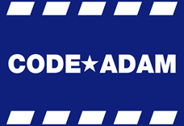

Code★Adam
definition
background
process
in korea
1981년,
유명 방송인 존 월시의 아들 아담 월시가 미국 플로리다 시어스 백화점에서 실종되고 그로부터 약 2주 뒤 살해된 채로 발견되었다.

이 사건을 계기로 미국에서는 실종아동 보호와 아동범죄 예방을 위한 캠페인이 대대적으로 진행되었으며, 큰 규모의 다중 이용 시설에서 실종 아동이 발생할 경우 신속히 찾을 수 있도록 조치를 취하는 코드 아담이 만들어졌다.